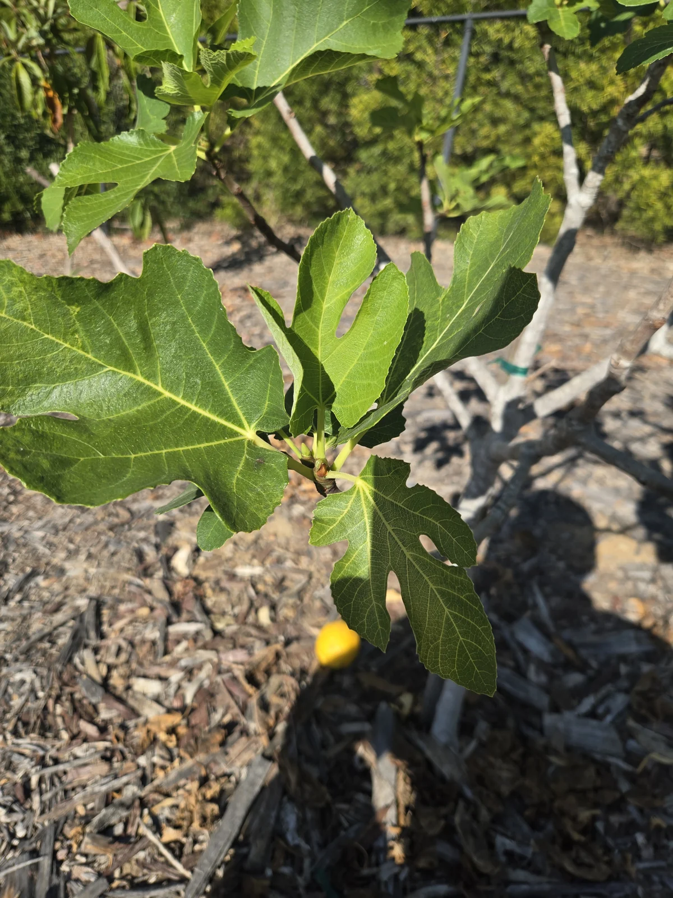
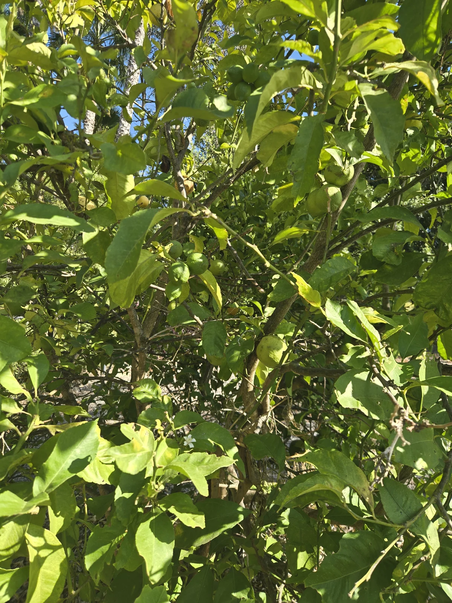

September 19 was a full day of palm work. I completed treatments at two residential properties, then looked over the fruit trees at the second stop at the owner's request.
The afternoon property had two Canary Island date palms, pygmy date palms, Mediterranean fan palms and a Mexican fan palm on the treatment record. I photographed the palms from several positions, including views up into the crowns. Those pictures will be useful when I return.
What I want to compare next time
A crown can look quite different depending on where you stand and where the sun is. I want enough of the palm in the frame to compare its overall shape, with closer views of the center and individual fronds. On the next visit, I can return to those angles and look for changes in growth, color or leaf position.
These are visit records. They don't establish a treatment result, and a green crown alone doesn't settle what's happening inside a palm. The value comes from keeping the photographs with the treatment history and comparing them over time.
The fruit trees raised a different set of questions
After the palm treatment, I walked through the fruit trees. One fig had extensive bare branching and pale remaining leaves. A smaller fig nearby held greener foliage. The citrus was carrying fruit, but some leaves were yellowing, curled or missing pieces.

I photographed the leaves and the nursery labels that were still attached. The labels helped identify apple varieties, peach, nectarine, persimmon and mango. Some of those photographs show little more than a label and a few leaves, so there is still a full canopy to examine before deciding what each tree needs.

The holes deserve a closer look. I'll check for fresh feeding and inspect both sides of the leaves for insects or other signs. Yellowing needs its own investigation. I had looked at the trees that afternoon, but had not yet checked the irrigation system or soil moisture.
The next visit starts at ground level
My first priorities are to check where the water is reaching, inspect the trunk bases, pull mulch away from bark and check whether ties are rubbing or becoming tight. On the sparse fig, I'll check bare branches for living buds before removing wood.
From there, I can decide what pruning, nutrition or targeted treatment is warranted. I've put the photographs and next steps into a written assessment for the owner. We have a starting record now, and a specific list of things to check when I come back.
Further reading: UC Agriculture and Natural Resources on yellow citrus leaves, including irrigation, root health and nutrition.